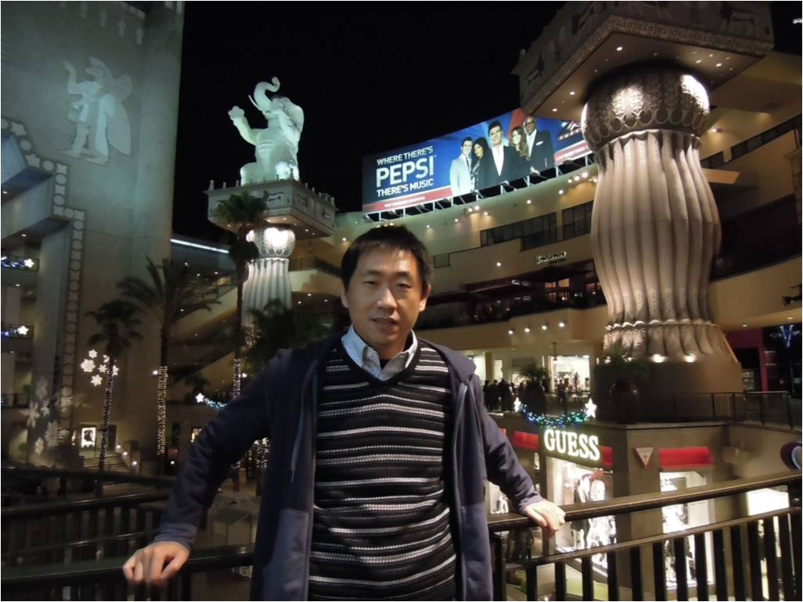

NPC to NPC
Social intelligence, perception, communication, collaboration, emotion, and long-term relationships.
ECCV 2026 Workshop
A half-day workshop on interactive intelligence at the intersection of generative world models, embodied agents, visual foundation models, games, simulation, and human-world interaction.
Overview
Recent breakthroughs in generative world models and generative agents have opened a path toward living worlds: dynamic, persistent environments where agents perceive, communicate, act, and evolve together with the worlds they inhabit.
Agent in World studies the gap between passive generation and static embodiment. Instead of treating environments as visual backdrops or agents as task executors, the workshop frames agents and worlds as reactive, intelligent participants in the same evolving system.
We invite researchers from computer vision, graphics, robotics, games, simulation, HCI, machine learning, and AI safety to discuss how visual foundation models can connect pixels, action, interaction, and long-term behavioral coherence.
Interaction Axes
Social intelligence, perception, communication, collaboration, emotion, and long-term relationships.
Physical intelligence, manipulation, procedural change, and reactive environment dynamics.
Collective populations interacting inside shared worlds with emergent social and physical behaviors.
Human intervention, user control, mixed-initiative world editing, and interactive storytelling.
Call for Papers
Original short papers, position papers, benchmark proposals, datasets, systems, demos, and early-stage research are welcome. Accepted submissions will be presented at the workshop but will not appear in the official ECCV proceedings.
Original research papers seeking formal workshop publication are invited to submit to the proceedings track. Accepted papers in this track will follow the official formatting, review, and camera-ready requirements announced with the submission instructions.
We welcome recently published or accepted work relevant to interactive agents, world models, games, simulation, embodied AI, and human-world interaction. This track is intended to broaden discussion and connect active communities; submissions will be considered for talks or posters.
The submission portal and formatting instructions will be announced soon. Please check back for updates.
Program
Invited Speakers

Confirmed
Assistant Professor, Harvard University
Confirmed
Assistant Professor, UC San Diego

Confirmed
Principal Research Scientist, NVIDIA
Confirmed
Professor, The University of Hong Kong
Tentative
Research Scientist, Meta Reality Labs
Tentative
Shanda AI Research Tokyo
Organizers

Shanda AI Research Tokyo
Institute of Science Tokyo
Shanda AI Research Tokyo
Shanda AI Research Tokyo

Institute of Science Tokyo / Shanda AI Research Tokyo

Shanda AI Research Tokyo
NVIDIA
The University of Hong Kong

University of California, Merced / Google DeepMind
Contact
Please contact the workshop organizers at wangzx1994@gmail.com, haiyangliu1997@gmail.com, or yichen.p.8896@m.isct.ac.jp.